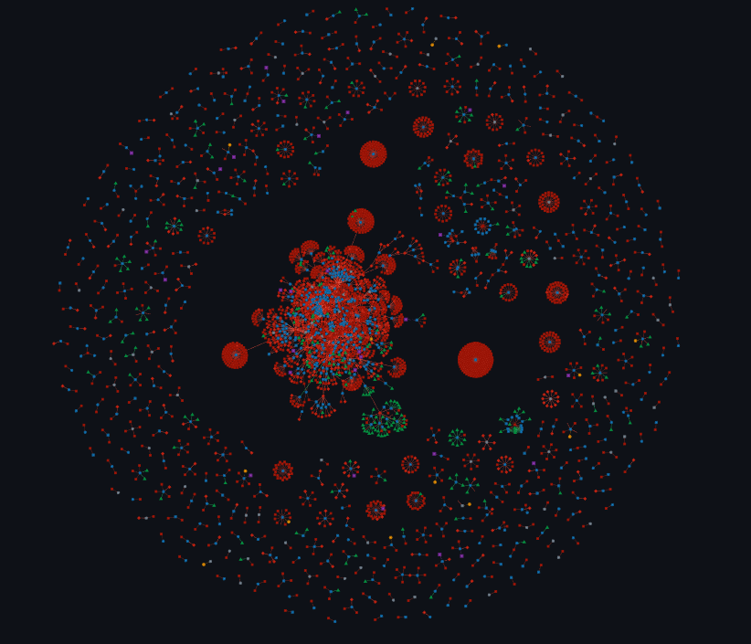
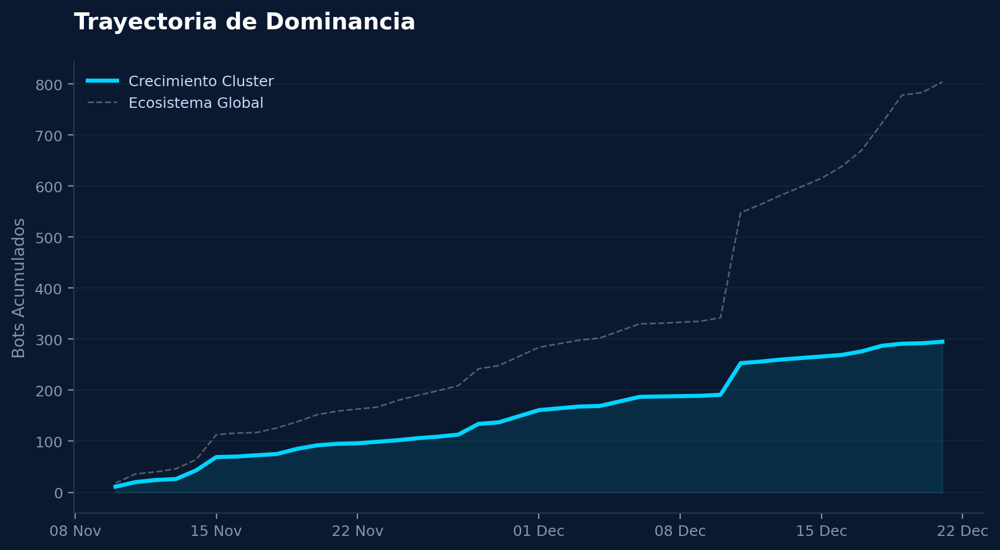
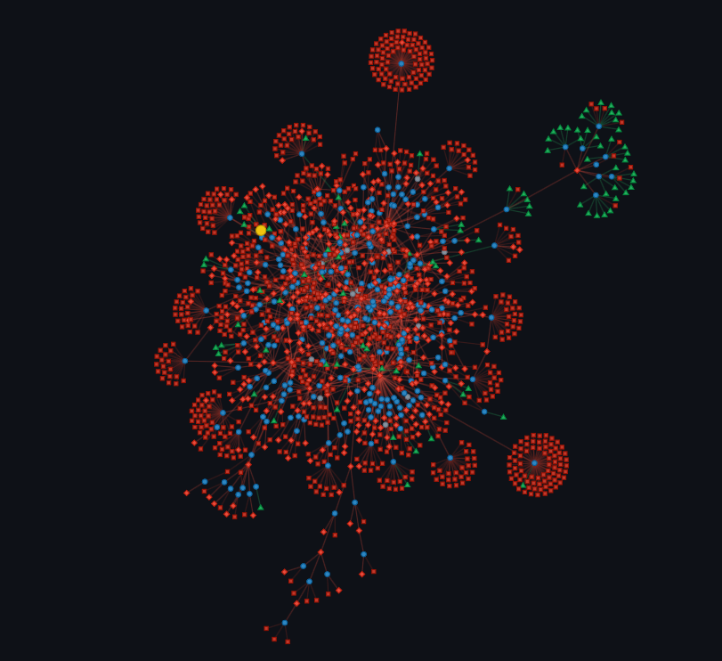
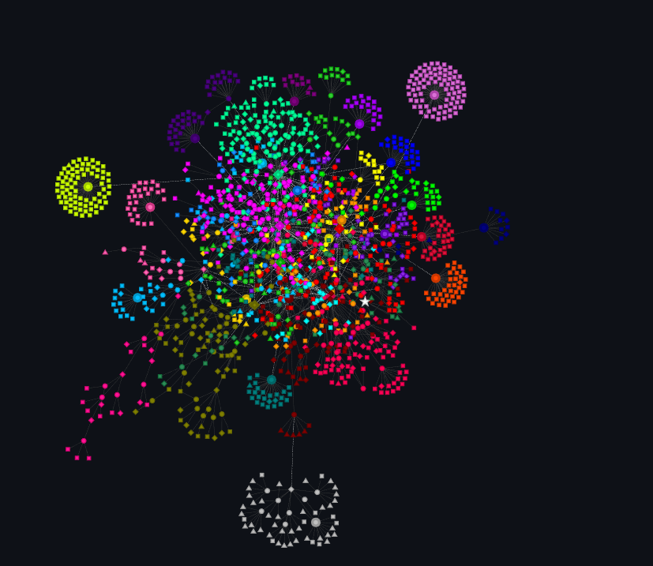
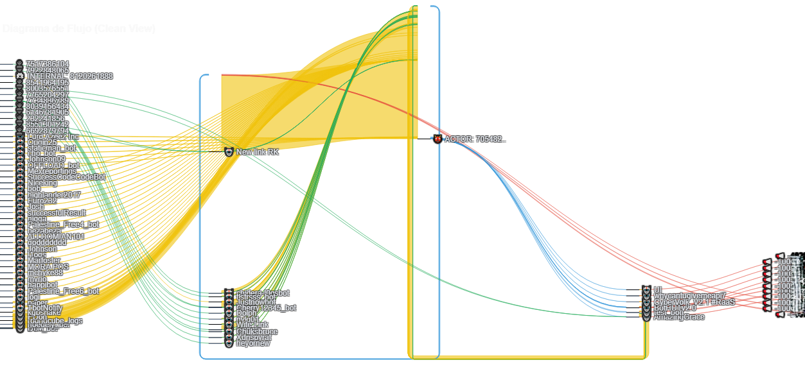
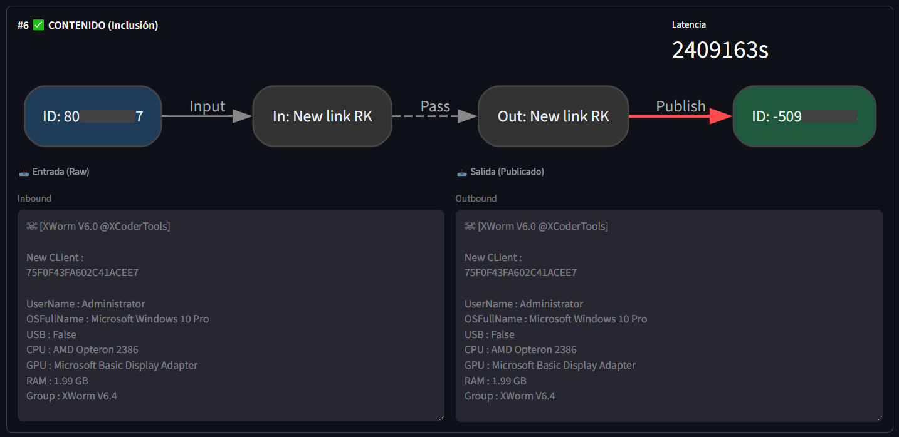

1. El Fenómeno de la Centralización
Desde el comienzo de la monitorización de bots en el proyecto, se observó la aparición de un cluster masivo que se diferencia claramente del resto. Gran parte de las implementaciones que hay en el proyecto surgen como herramientas de respuesta a las incógnitas que aparecen al observar este cluster. En este documento, intentando ser breve y omitir los detalles técnicos y herramientas secundarias de BotScape, se hará un análisis de este fenómeno en profundidad.

2. Métricas de Evolución
Es interesante, antes de lanzarnos al análisis profundo, hacer un repaso de las métricas principales que conocemos del cluster. Se aprovecha también para hacer un inciso que debe tenerse en cuenta a lo largo del informe: Estamos viendo solo lo que se ha podido monitorizar, y esto nos puede llevar a conclusiones imprecisas, puesto que no conocemos la imagen completa.

3. Deconstrucción: Detección de Comunidades
El primer paso para poder tratar con este cluster de forma inteligente es encontrar una forma de subdividirlo. Uno puede analizar los bots uno a uno y observar las enormes diferencias que existen a priori, planteando la duda: ¿cómo es posible que este cluster esté unido?
Aplicando el algoritmo de Louvain, hemos particionado el grafo para dejar de ver un bloque homogéneo. El estudio manual de los bots más influyentes dentro de estas comunidades ha revelado patrones interesantes y hemos podido descubrir campañas muy distintas que, por algún motivo, pertenecían igualmente a este cluster.
Matemáticamente, el algoritmo de Louvain funciona mediante la optimización de la Modularidad (Q), un valor escalar que cuantifica la densidad de enlaces dentro de las comunidades en comparación con los enlaces entre ellas. El proceso es heurístico e iterativo, operando en dos fases repetitivas: primero, la optimización local, donde cada nodo se mueve a la comunidad de sus vecinos si esto incrementa la modularidad global; y segundo, la agregación, donde se construye una nueva red cuyos nodos son las comunidades encontradas. Esto nos permite detectar estructuras jerárquicas y desenmarañar la "bola de pelo" (hairball) inicial en subgrupos funcionales coherentes.


El Factor de Unión: MaaS y Publicidad
A pesar de las barreras lingüísticas y operativas, el cluster se mantiene unido. Nuestra investigación ha detectado la presencia sistemática de patrones publicitarios idénticos y actualizaciones de malware compartidas. Descubrir esto nos hace considerarlo como una posible explicación de por qué este cluster existe: Si los actores están usando un MaaS, o contribuyen a un mercado negro, quizás de ahí surjan vínculos a modo de canales o de bots filtrados/compartidos. Se muestran a continuación dos ejemplos de estos patrones mencionados.
4. Verificación de Hipótesis: Anatomía del Cluster
Tras identificar estos patrones, procedimos a validar matemáticamente si dichos enlaces constituyen la columna vertebral del clúster. Para ello, analizamos la prevalencia de cada campaña y su capacidad para conectar comunidades que, de otro modo, permanecerían aisladas. En concreto, evaluamos a los bots que difunden mensajes como los mostrados previamente como evidencia, con el objetivo de comprobar si estos contenidos se propagan a través de múltiples comunidades dentro del clúster. Los resultados son concluyentes:
| SERVICIO / MAAS | BOTS (Cluster) | COMUNIDADES | PENETRACIÓN | CLASIFICACIÓN |
|---|---|---|---|---|
| 1. MISHALAND (Market) | 29 | 9 | 45.0% | 🔥 DOMINANTE |
| 2. XWORM | 23 | 8 | 40.0% | ✅ TRANSVERSAL |
| 3. XCODERTOOLS | 12 | 5 | 25.0% | ✅ TRANSVERSAL |
| 4. SOULKCRYPTER (MaaS) | 7 | 3 | 15.0% | ⚠️ LOCAL |
| 5. PHANTOM STEALER | 4 | 3 | 15.0% | ⚠️ LOCAL |
| 6. YUNDGDON365 | 4 | 3 | 15.0% | ⚠️ LOCAL |
Hemos simulado la eliminación de los nodos vectores de estas campañas para medir la resiliencia estructural:
- Si eliminamos Mishaland, el cluster colapsa y se fragmenta en 50 pedazos aislados.
- Si eliminamos xWorm, la fragmentación es aún mayor: 51 pedazos.
- Campañas locales como Soulkcrypter tienen un impacto menor (26 fragmentos).
A continuación, presentamos la visualización superpuesta que revela cómo estas "arterias" de publicidad (en neón) coinciden con caminos críticos que mantienen unida la infraestructura base (en gris).
Con esto, tenemos una explicación lógica de la existencia del cluster. A pesar de que encontramos campañas con fines completamente distintos, su denominador común es el uso de MaaS como xWorm, que posiblemente por su método de distribución permite que existan vínculos entre actores, puede que incluso sin su conocimiento en algunos casos. Lo mismo ocurre con la difusión del mercado negro MISHALAND y los otros casos estudiados.
De nuevo, cabe mencionar que las conclusiones que extraemos son de aquello que monitorizamos, realmente desconocemos la magnitud de estas conexiones o si estos vínculos observados son causados por cómo se vende el malware o quizás filtraciones de tokens. En cualquier caso, ahora dejaremos de lado el por qué y nos centraremos en el quién.
5. Perfilado de Actores y Atribución
Procedemos a trabajar con grafos donde los actores son el centro de atención, para ver cómo se relacionan entre sí, si existe infraestructura compartida de algún modo y para ver en qué canales vuelcan información.
El análisis revela 2 actores principales que tienen acceso a información de unos 60 bots registrados en el ecosistema. Se observa infraestructura compartida y también bots compartidos entre sí. Esto refuerza la hipótesis de que el cluster se sostiene a través de la difusión de malware, sugiriendo que el malware vendido es compartido por varias personas, o que el acceso adquirido es para un token de bot compartido.
Adicionalmente, observamos infraestructura que evidencia procesos de automatización (como instancias de n8n), así como canales específicos donde convergen múltiples operadores para enviar información exfiltrada.
A. Topología de Infraestructura (C2 Control)
Relación directa entre los Operadores (Puppet Masters) y sus activos (Bots + IPs).
B. Topología de Impacto (Channel Difussion)
Mapa de difusión que muestra en qué canales/grupos impactan estos operadores.
6.Análisis de Actores Críticos
Una vez descubierto que los actores del cluster operan de forma aparentemente coordinada, ponemos el foco en cómo fluye la información a través de estos y sus bots asociados.
Para comprender mejor las rutas de tráfico existentes en el cluster, implementamos visualización de diagramas Sankey. En concreto, veremos el diagrama para el actor con más bots atribuidos del cluster, que contrastamos previamente a través de BotScape así como en el grafo previo de este reporte.
6.1. Visualización de Flujo (Sankey Analysis)
Nos interesa el tráfico de este actor puesto que actúa como un intermediario clave en el cluster, así que queremos confirmar que efectivamente la información exfiltrada viaja y no es simplemente una relación unidireccional (bot -> actor).
El diagrama ofrece una intuición inicial sobre las interacciones del ecosistema. Para su interpretación, se han categorizado los nodos según la siguiente codificación:
| Elemento | Descripción de la interacción |
|---|---|
| AMARILLO | Bots o usuarios del ecosistema que interactúan con el actor o bots del actor. |
| VERDE | Bots o usuarios externos que entablan comunicación con los bots del entorno del actor. |
| AZUL | Bots receptores de comandos ejecutados por el actor seleccionado. |
| ROJO | Destinos de infraestructura pública utilizados como canales. |
Nota metodológica: Esta visualización no sigue un orden específico ni garantiza una secuencia causal, por lo que no deben extraerse conclusiones definitivas basadas únicamente en esta disposición.

6.2. Validación de la Hipótesis de Exfiltración
Al observar el Sankey, surge la incógnita: ¿Realmente se aprovechan estas rutas para el envío de comunicaciones o los componentes trabajan de forma aislada? No tenemos una garantía inicial. Es por ello que realizamos la implementación de un script dedicado de correlación para comprobar si un mensaje ha pasado efectivamente por esta ruta de tráfico designada.
Ciertamente, los resultados muestran muchos positivos, demostrando nuestra hipótesis de que las rutas de tráfico observadas serían utilizadas activamente para la redirección y exfiltración de datos.

De este modo, comprobamos cómo estos actores no actúan de forma aislada, sino que orquestan flujos complejos de información dentro del ecosistema.
7. Conclusiones y Próximos Pasos
En este informe hemos puesto de manifiesto parte del potencial de BotScape para pasar de una cantidad masiva de mensajes generados por bots sin una correlación aparente a una representación estructurada en forma de grafos —aunque igualmente compleja—, y cómo, de manera progresiva, hemos ido refinando el análisis (identificación de comunidades, actores y rutas de tráfico) hasta lograr una comprensión integral del clúster.
De cara a informes futuros, algunos de los próximos pasos que han quedado fuera del alcance de este trabajo incluyen, por un lado, la identificación de los puntos de venta de estas campañas (ya sea dentro de Telegram o en plataformas externas) y, por otro, la mejora y ampliación de las funcionalidades basadas en modelos de lenguaje (LLM), orientadas a profundizar en el análisis semántico y conductual de los bots.
Asimismo, debido a las limitaciones de GPU y recursos computacionales, las herramientas de inteligencia artificial desarrolladas han quedado en un segundo plano en esta fase del proyecto. No obstante, han servido como una sólida prueba de concepto que confirma su gran utilidad en investigaciones de este tipo. De hecho, el descubrimiento inicial de MISHALAND fue posible gracias a la implementación de un LLM especializado en el análisis de bots, el cual, a partir del contexto semántico de los mensajes y de la relación entre múltiples publicaciones, fue capaz de inferir la existencia de un mercado negro subyacente y formular una hipótesis coherente sobre su funcionamiento.